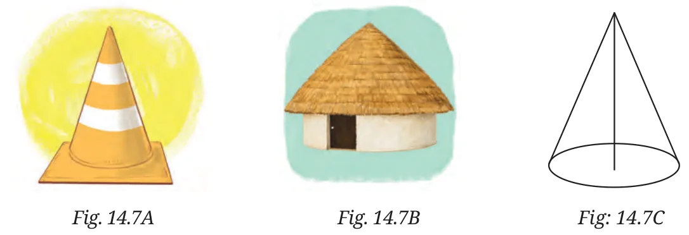
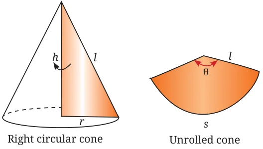
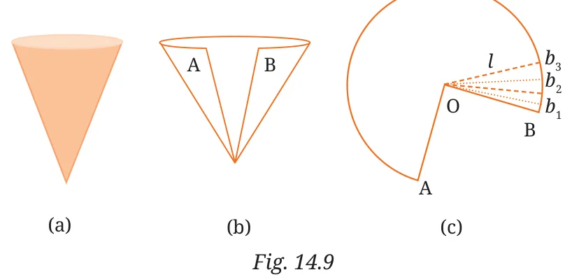

A right circular cone is generated when a right triangle is rotated about one of its legs. The relationship among the slant length \(l\), the height \(h\), the radius \(r\) of the base is
\(l^{2} = h^{2} + r^{2}\) (using the Baudhāyana–Pythagoras theorem)

Imagine cutting the cone along a slant edge and ‘opening up’ or unrolling the surface. The unrolled surface has the shape of a sector of a circle. To create the cone again, bring the two straight edges together. You can use the cutout of the net of a cone given at the end of the textbook to make a cone.
What is the curved surface area of a cone?
The formula for surface area becomes clear if we imagine cutting the cone along a slant edge, unrolling the surface, and cutting it up into a large number of very thin sectors, each of which can be regarded as a narrow isosceles triangle of height \(l\) (Fig. 14.9).

From Fig. 14.9, it follows that the curved surface area (CSA) of the cone is equal to
\(\text{CSA} = \frac{1}{2}b_{1}l + \frac{1}{2}b_{2}l + \cdots + \frac{1}{2}b_{n}l = \frac{1}{2}(b_{1} + b_{2} + \cdots + b_{n})l\)
\(= \frac{1}{2} \times \text{circumference of the base} \times l\)
\(= \frac{1}{2}(2\pi r)l = \pi rl\)
Here is another way of working out the formula for the curved surface area. We have, from the formula for area of a sector of a circle,
\(\text{CSA} = \pi l^{2} \times \frac{\theta^\circ}{360^\circ} = \pi l \times l \times \frac{\theta^\circ}{360^\circ}.\)
Let us try to express this formula in terms of \(r\) and \(l\). For this, note that from the cone, we have,
\(\text{arc length} = s = 2\pi r,\)
and from the sector, we have
\(\text{arc length} = s = \frac{\theta^\circ}{360^\circ} \times 2\pi l.\)
Equating these two, we get
\(\frac{\theta^\circ}{360^\circ} = \frac{r}{l}.\)
From this, we see that the curved surface area is
\(\text{CSA} = \pi rl,\)
the same formula as earlier. The formula for the total surface area (TSA) (curved portion plus the flat base) is \(\text{TSA} = \pi rl + \pi r^{2}\).
What is the volume of a cone? It turns out that
\(V = \frac{1}{3}\pi r^{2}h.\)
The volume formula tells us that the volume of a cone is exactly \(\frac{1}{3}\) the volume of a cylinder formed on the same circular base and with the same height as the cone. The formula may be expressed in different ways, e.g.,
\(V = \frac{1}{3} \times \text{area of base} \times \text{height}.\)
Students often wonder about the factor of \(\frac{1}{3}\) in this formula. Why \(\frac{1}{3}\)? To explain the reason for this factor requires more advanced methods, e.g., calculus, which you will study when you are in Grade 12.
But it is possible to experimentally verify this relationship. Let us start with a right circular cylindrical tin. Using paper, we make a right circular cone with the same base radius and the same height as the cylinder (see Fig. 14.10).
We are now going to perform an experiment to find the volume of the cone. We need some clean fine-grained salt for this purpose.
Fill the cone to the brim with salt. Empty it into the cylinder. We find that it fills up only part of the cylinder. Fill the cone with salt to the brim again and empty it into the cylinder. We find that the cylinder is still not full. When we fill the cone with salt for the third time and empty it yet again into the cylinder, we find that the cylinder is full to the brim.
We can therefore conclude that the volume of the cylinder is three times the volume of the cone. That is, given a right circular cylinder and a right circular cone of the same base radius and the same height, the cone has one third the volume of the cylinder. This gives an experimental verification of the formula given above.
Here is another hands-on activity that uses modelling clay (earlier this used to be called ‘plasticine’). Carefully mold the clay into a solid cylinder and measure its radius and height. Then reshape the same portion of clay into identical cones, each having the same radius and the same height as the cylinder. You will find that you are able to make exactly three such cones. This brings out the relationship between the volume of the cylinder and cone quite visibly
\(V = \frac{1}{3} \times \text{area of base} \times \text{height}.\)
The formula for the volume of a cone was first found by the Greek mathematician Archimedes (c. 225 BCE). He also derived formulas for the surface area and volume of a sphere (i.e., ball), which we will study in later sections.
Example 3: A right triangle ABC with sides 5 cm, 12 cm and 13 cm is rotated through \(360^\circ\) about the side with length 12 cm. Find the volume of the solid so obtained.
The triangle has sides 5 cm, 12 cm, 13 cm.
Since \(5^{2} + 12^{2} = 25 + 144 = 169 = 13^{2}\), the triangle is a right-angled triangle with perpendicular sides 5 cm and 12 cm and hypotenuse 13 cm.
The triangle is rotated about the side with length 12 cm. When a right-angled triangle rotates about one of its perpendicular sides, it forms a right circular cone. Here, height of cone \(h = 12\) cm, radius of cone \(r = 5\) cm.
Hence, volume of the cone (\(V\)) \(= \frac{1}{3}\pi r^{2}h = \frac{1}{3}\pi \times 5^{2} \times 12 = 100\pi\ \text{cm}^{3}\).